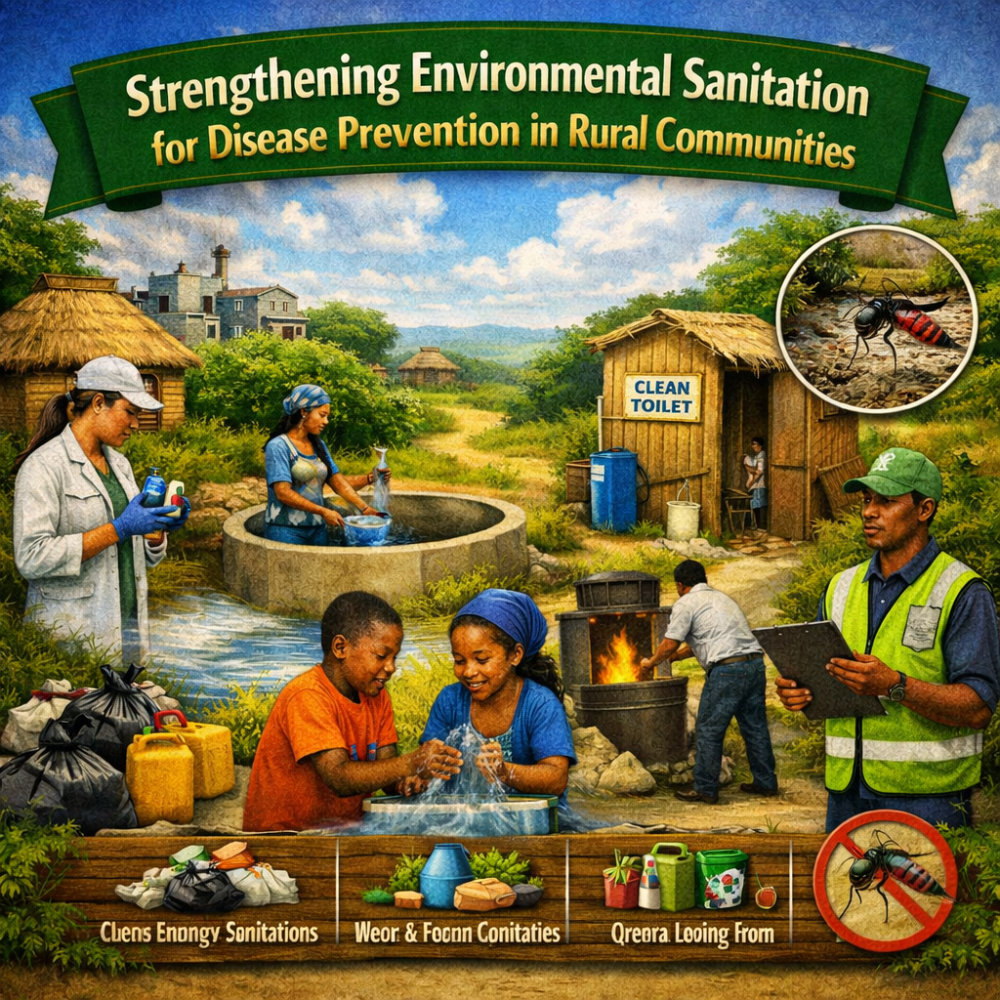

Strengthening Environmental Sanitation for Disease Prevention in Rural Communities
Environmental sanitation is a cornerstone of public health and a critical determinant of community wellbeing. In many rural communities, inadequate sanitation infrastructure, poor waste management practices, and limited access to hygiene facilities continue to contribute to the spread of communicable diseases. Strengthening environmental sanitation systems is therefore essential for protecting populations from preventable illnesses and promoting sustainable development.
Effective sanitation practices help reduce the transmission of waterborne, foodborne, and vector-borne diseases. Proper disposal of solid and liquid waste, safe management of drinking water sources, and maintenance of clean public spaces create healthier living environments for communities. These interventions not only improve health outcomes but also enhance social and economic productivity.
Overcoming the unique challenges of rural sanitation requires a unified bridge built by governments, health leaders, and local communities working hand in hand.
Investing in environmental sanitation is an investment in human health, dignity, and economic growth. By prioritizing sanitation improvement programs and promoting community participation, rural communities can significantly reduce disease burdens and create healthier environments for current and future generations.
Community Participation as a Driver of Sustainable Sanitation
Sustainable sanitation interventions are most successful when communities actively participate in planning, implementation, and maintenance processes. Community ownership encourages responsible sanitation practices and ensures that facilities remain functional and beneficial over the long term. Public health education and behavior change communication programs empower residents with knowledge and skills necessary to adopt healthier practices.

Innovative Approaches to Disease Prevention Through Environmental Health
Advancements in environmental health technologies and data-driven approaches are transforming sanitation management in rural settings. Low-cost water treatment systems, ecological sanitation technologies, and mobile-based health education platforms are helping communities address sanitation challenges more effectively and efficiently.
Furthermore, integrating environmental health surveillance with disease monitoring systems enables early detection of potential health risks and supports timely interventions. By combining innovation, research, and community engagement, public health practitioners can develop comprehensive strategies that strengthen disease prevention efforts and improve overall community wellbeing.

Elizabeth Alice Reply
Excellent article highlighting the importance of sanitation in disease prevention.